Calcul de 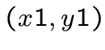
Pour la taille du segment 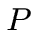, la taille d'une case convient
(on prendra 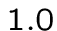 comme taille de case). Pour 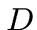, la distance
entre notre position et le segment de projection , une moitié
de case convient.
Partons du cas où l'angle de vision 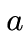 est nul et que notre
position est 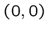. Les coordonnées sont alors égales à
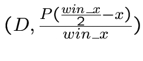
On transforme ensuite ces coordonées grâce aux formules de rotation
suivant l'angle :
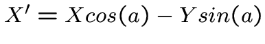 et
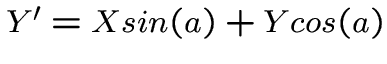
Enfin on effectue une translation jusqu'à notre position réelle
dans le labyrinthe :
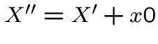 et 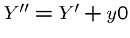